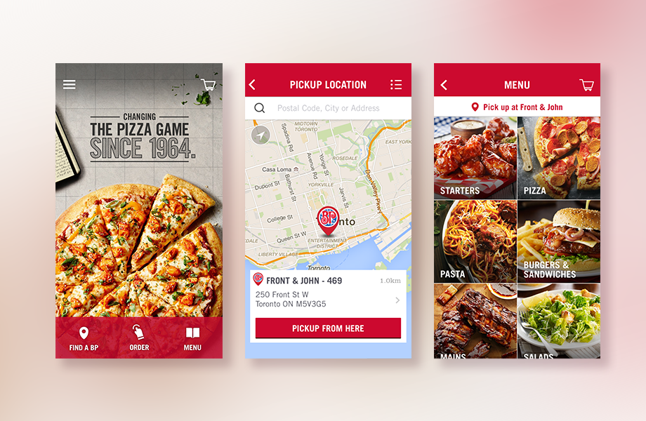

Boston Pizza iPhone app
©2014 Boston Pizza, Designed and developed by Pivotal Labs, branding by TAXI,
(Download the app here)
Focused on creating an easy & fast online ordering while providing the same level of customization for users.
Pivotal responsible for all UX and mobile related work, brand elements and assets prsovided by TAXI.

< back to previous page